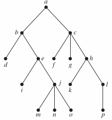
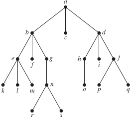

Section 11.3 Tree Traversal
p804: 8, 9
In Exercises 7–9 determine the order in which a preorder traversal visits the vertices of the given ordered rooted tree.
8. 
Solution
a, b, d, e, i, j, m, n, o, c, f, g, h, k, l, p
9. 
Solution
a, b, e, k, l, m, f, g, n, r, s, c, d, h, o, i, j, p, q